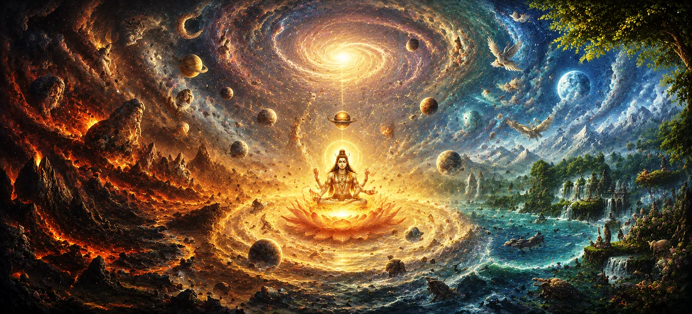

सृष्टि का वर्णन
उमा संहिता के अध्याय 29, अध्याय 30 में खोजे गए भव्य आदिकालीन उत्पत्ति पर निर्माण प्रस्तुत है सृष्टि का वर्णन, ब्रह्मांड की संरचनात्मक वास्तुकला और व्यवस्थित क्रम का विवरण। अमूर्त ब्रह्मांडीय सिद्धांतों से मूर्त सार्वभौमिक डिजाइन में परिवर्तन करते हुए, शास्त्र बताता है कि जीवन के विभिन्न स्तरों, भौगोलिक विभाजनों और रूपों को व्यवस्थित रूप से कैसे वर्गीकृत और कायम रखा जाता है।
यह अध्याय साधकों को ब्रह्मांड का एक व्यापक वास्तुशिल्प खाका प्रदान करता है, जिसमें बताया गया है कि भौतिक और आध्यात्मिक क्षेत्रों में दिव्य व्यवस्था कैसे प्रकट होती है।
इस पाठ में मुख्य विषय (11 स्तंभ)
- 01 संरचित ब्रह्मांड का वास्तुशिल्प खाका →
- 02 ग्रह प्रणालियों और क्षेत्रों की व्यवस्थित व्यवस्था →
- 03 स्थलीय क्षेत्रों और महाद्वीपीय संरचनाओं का विभाजन →
- 04 ब्रह्मांडीय महासागरों और जल निकायों की अभिव्यक्ति →
- 05 जीवित आदेशों का पदानुक्रम और वर्गीकरण →
- 06 दिव्य संस्थाओं, देवताओं और अभिभावक आत्माओं का उद्भव →
- 07 जनसंख्या और प्रजाति प्रसार में प्रजापतियों की भूमिका →
- 08 सार्वभौमिक तत्वों के बीच परस्पर निर्भरता और संतुलन →
- 09 लौकिक कानून और नैतिक व्यवस्था का रखरखाव (धर्म) →
- 10 भगवान शिव सभी प्रकट संरचनाओं के सर्वोच्च राज्यपाल के रूप में →
- 11 विवरण से सृष्टि के आगे के विवरण में परिवर्तन →
1. संरचित ब्रह्मांड का वास्तुशिल्प खाका
यह प्रारंभिक खंड यह स्थापित करता है कि कैसे अमूर्त सृजन ठोस ब्रह्मांडीय वास्तुकला में परिवर्तित होता है, जो दिव्य बुद्धि द्वारा डिजाइन की गई स्थूल ब्रह्मांडीय संरचना को रेखांकित करता है।
उमा संहिता उस व्यवस्थित ढांचे का विवरण देती है जो भविष्य की सभी दुनियाओं का समर्थन करता है।
2. ग्रह प्रणालियों और क्षेत्रों की व्यवस्थित व्यवस्था
पाठ सतत संतुलन बनाए रखने के लिए ब्रह्मांडीय कानूनों द्वारा शासित उच्च और निम्न दिव्य क्षेत्रों, तारकीय पिंडों और कक्षीय पथों की नियुक्ति की रूपरेखा देता है।
प्रत्येक खगोलीय क्षेत्र दैवीय लय के अनुरूप संचालित होता है।
3. स्थलीय क्षेत्रों और महाद्वीपीय संरचनाओं का विभाजन
उमा संहिता स्थलीय विमानों का भौगोलिक और संरचनात्मक विवरण प्रदान करती है, जिसमें नश्वर और आध्यात्मिक विकास के लिए निर्दिष्ट प्राथमिक भूभाग और क्षेत्रों का विवरण दिया गया है।
विभिन्न कार्मिक यात्राओं का समर्थन करने के लिए सांसारिक डोमेन को सावधानीपूर्वक विभाजित किया गया है।
4. ब्रह्मांडीय महासागरों और जल निकायों की अभिव्यक्ति
धर्मग्रंथ विशाल जल निकायों और चारों ओर से घिरे महासागरों का वर्णन करता है जो महाद्वीपों को अलग करते हैं, उनके शुद्धिकरण और जीवन-निर्वाह गुणों पर प्रकाश डालते हैं।
जल संपूर्ण भौतिक सृष्टि के पोषण के लिए एक महत्वपूर्ण माध्यम के रूप में कार्य करता है।
5. जीवित आदेशों का पदानुक्रम और वर्गीकरण
उमा संहिता जीवित प्राणियों की विविध प्रजातियों को वर्गीकृत करती है - गतिहीन वनस्पतियों और जलीय जीवन से लेकर कीड़े, पक्षी, जानवर और मनुष्य तक - उनकी विकसित होती चेतना के अनुसार।
प्रत्येक जीवित रूप जीवन की सीढ़ी पर एक विशिष्ट पायदान पर है।
6. दिव्य संस्थाओं, देवताओं और अभिभावक आत्माओं का उद्भव
पाठ में प्राकृतिक शक्तियों और ब्रह्मांडीय कानूनों के प्रबंधन के लिए सौंपे गए उच्च खगोलीय संस्थाओं, देवताओं और आध्यात्मिक अभिभावकों की उपस्थिति का विवरण दिया गया है।
ये प्राणी ब्रह्मांड की परिचालन अखंडता को बनाए रखते हैं।
7. जनसंख्या एवं प्रजाति प्रसार में प्रजापतियों की भूमिका
उमा संहिता बताती है कि कैसे आदिम प्रजापतियों (संतान के स्वामी) को विभिन्न प्रजातियों का प्रचार करने और खाली स्थानों को सक्रिय जीवन रूपों से भरने का अधिकार दिया गया था।
प्रसार ब्रह्मांडीय विकास चक्र की निरंतरता सुनिश्चित करता है।
8. सार्वभौमिक तत्वों के बीच परस्पर निर्भरता और संतुलन
शास्त्र पृथ्वी, जल, अग्नि, वायु और आकाश के बीच बनाए गए नाजुक संतुलन पर जोर देता है, जिसमें दिखाया गया है कि किसी एक का विघटन संपूर्ण ब्रह्मांडीय पारिस्थितिकी को कैसे प्रभावित करता है।
सार्वभौमिक अस्तित्व के लिए तत्वों के बीच सामंजस्य आवश्यक है।
9. लौकिक कानून और नैतिक व्यवस्था का रखरखाव (धर्म)
उमा संहिता बताती है कि संरचनात्मक निर्माण आंतरिक रूप से नैतिक व्यवस्था से जुड़ा हुआ है, यह सुनिश्चित करता है कि धर्म और सच्चाई भौतिक और आध्यात्मिक दुनिया की स्थिरता को बनाए रखती है।
धर्म वह अदृश्य गोंद है जो निर्मित ब्रह्मांड को एक साथ बांधे हुए है।
10. भगवान शिव सभी प्रकट संरचनाओं के सर्वोच्च राज्यपाल के रूप में
पाठ दोहराता है कि जबकि विभिन्न देवता और शक्तियां संरचनात्मक विवरणों का प्रबंधन करती हैं, भगवान शिव सभी प्रकट वास्तविकता के सर्वोच्च राज्यपाल और परम स्वामी के रूप में खड़े हैं।
सारी सृष्टि उसकी दिव्य निगरानी और संप्रभु इच्छा के अधीन संचालित होती है।
11. विवरण से सृष्टि के आगे के विवरण में परिवर्तन
सृष्टि के व्यापक संरचनात्मक विवरण को स्थापित करने के बाद, उमा संहिता अगले अध्याय में सार्वभौमिक विकास के और अधिक जटिल विवरणों को उजागर करने की तैयारी करती है।
यह परिवर्तन साधकों को ब्रह्मांडीय विकास के पौराणिक इतिहास में गहराई तक ले जाता है।
आध्यात्मिक अंतर्दृष्टि
अध्याय 30 हमें ग्यारह मूलभूत स्तंभों के माध्यम से सिखाता है कि ब्रह्मांड ईश्वरीय कानून द्वारा शासित एक जटिल रूप से व्यवस्थित वास्तुकला है। इस संरचना को समझकर, साधक अस्तित्व के हर पहलू के पीछे के गहन क्रम की सराहना करते हैं।
अक्सर पूछे जाने वाले प्रश्न
① उमा संहिता में अध्याय 30 का मुख्य विषय क्या है?
अध्याय में सार्वभौमिक सृष्टि के वास्तुशिल्प और व्यवस्थित टूटने का विवरण दिया गया है, जिसमें भौतिक दुनिया और जीवित आदेशों की संरचना कैसे की जाती है, इसका विस्तार किया गया है।
② यह अध्याय पिछले सृजन वृत्तांतों को किस प्रकार विस्तृत करता है?
जबकि अध्याय 29 ने आदिम उत्पत्ति और सिद्धांतों की खोज की, अध्याय 30 दुनिया और संस्थाओं के संरचनात्मक लेआउट और वर्गीकरण में गहराई से उतरता है।
सृजन के संरचनात्मक विवरण के बाद, पाठ सृजन के आगे के विवरण में सार्वभौमिक विकास पर और विस्तार में परिवर्तित हो जाता है।